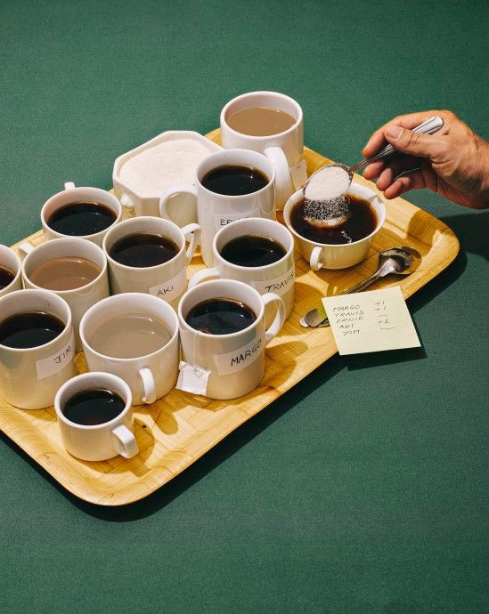

our story
What began as a university project in 2025 has blossomed into a vibrant global community of coffee enthusiasts.
Here, we don’t just share a love for coffee—we celebrate the stories, rituals, and connections that each cup brings.
Whether you’re a seasoned barista, a home brewer, or simply someone who appreciates a great brew, you’re welcome here.
Join us and be part of a journey that’s as rich and diverse as the coffee we love.
